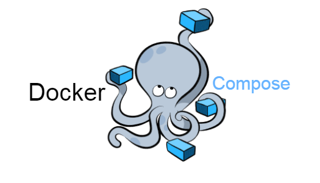

A full web platform project centered around the Pong game, featuring user management, microservices, and a modern interface. Built as part of 42 School's curriculum.
The frontend is a Single Page Application developed in TypeScript using Tailwind CSS. It manages user interaction, navigation, matchmaking, and the Pong game interface.
The backend is built with Node.js and the Fastify framework. A SQLite database stores user data, scores, and game records. The backend exposes a secure REST API consumed by the frontend.
The project is fully containerized using Docker. Each component (frontend, backend, database) runs in its own container, orchestrated via docker-compose. This ensures isolation, scalability, and portability.